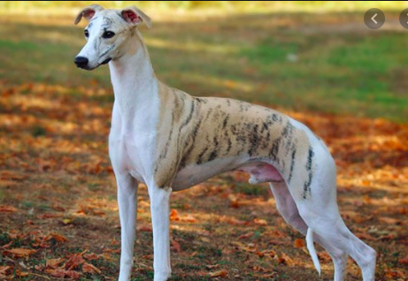

Welcome to my page! Here you will find a brief description of the most amazing and beautiful dogs - whippets. It is a relatively small breed that originated in England but has become quite popular around the world recently. I hope you will find it interesting.
| Woof! | Woof-woof! |
|---|---|
| Woof | Woof woof woof |
Introduction
The Whippet (also English Whippet or Snap Dog) is a dog breed of medium size. They are a sighthound breed that originated in England, where they descended from Greyhounds. Whippets today still strongly resemble a smaller Greyhound. Part of the Hound group, Whippets have relatively few health problems other than arrhythmia. Whippets also participate in dog sports such as lure coursing, agility, dock diving and flyball. The name is derived from an early 17th-century word, now obsolete, meaning "to move briskly".
The Victorian English writers describe the emerging modern breed of Whippet or snap-dog bred for catching rabbits, coursing competitions, straight rag-racing, and for the novel show fancy. This has led to Whippets being described as "the poor man's racehorse". They are a popular companion breed frequently used in amateur racing, lure coursing, and dog shows; they have the highest running speed of breeds for their weight: and are possibly the fastest accelerating dog breed.
History
Whippets were bred to hunt by sight, coursing game in open areas at high speeds. There are numerous representations of small greyhound-like hounds in art dating back to Ancient Egyptian times.In medieval England, a small Greyhound breed became popular for use as a ratting dog, the first written English use of the word Whippet with regard to a type of dog was in 1610.
The age of the modern Whippet dawned in 1891 when The Kennel Club granted the breed official recognition, thus making the Whippet eligible for competition in dog shows, and commencing the recording of their pedigrees. In the United States, the Whippet was recognised in 1888 by the American Kennel Club.
Description
Whippets are a medium-sized dog weighing from 15 to 42 pounds (6.8 to 19.1 kg).
Because colour is considered immaterial in judging Whippets, they come in a wide variety of colours and marking patterns, everything from solid black to solid white, with red, fawn, brindle, blue, or cream.
The coat is short, smooth and close.
They are the fastest dog of their weight, capable of achieving speeds of up to 35 miles per hour (56 km/h). This is due to their ability to run in a double suspension gallop. This gait results in four of the dog's legs being off the ground twice in each stride, once when the legs are completely extended and again when they are tucked under the body.
Whippets are quiet, not prone to barking, and require regular exercise.
They are generally gentle dogs and are often content to spend much of
the day resting.
Want to know more?
Here you'll find some links where you can read and watch more about the breed. You're welcome!